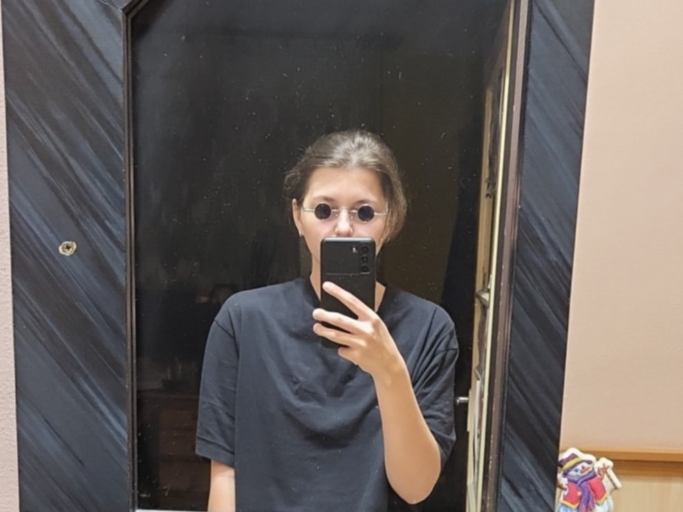

Rólam
Kata vagyok, 19 éves és a NMSZC Szent-Györgyi Albert Technikumba járok. Jelenleg informatikát tanulok. Szabadidőmben szeretek filmeket nézni, videójátékokkal játszani, valamint a barátaimmal kikapcsolódni. Nagyon szeretem a cicákat és a kávét! Egyik kedvenc kikapcsolódásom, hogy utazok és közben zenét hallgatok.
Céljaim
A jövőben el szeretném elvégezni az egyetemet, és ebben a szakterületben dolgozni, hogy legyen sok pénzem, amiből majd egy lakást tudok venni.
2023
Horvátországban jártam, azon belül Vodicében. Sok könyvet olvastam akkor, és számomra ez egy kellemes utazás volt.
2024
Több helyen is jártam a barátaimmal Magyarországon belül, de amit kiemelnék, az Szentendre. Nagyon tetszett a város, a táj, és amikor ott jártam, meglepően kevesen voltak. Tervezek vissza menni, hiszen a hangulata a városnak nagyon megtetszett.
Helyek ahol még jártam 2024-ben:
- Visegrád
- Esztergom
- Pozsony